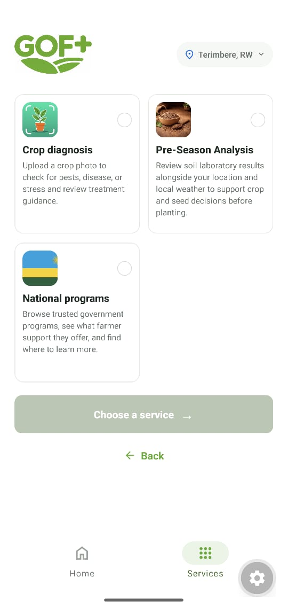
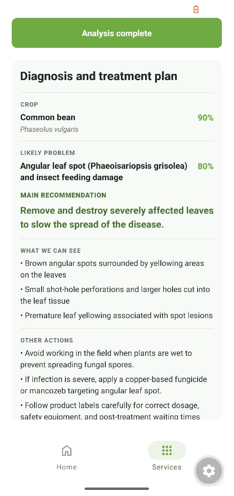
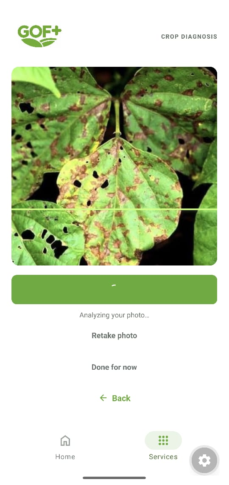

GOF+ is an AI farming assistant that helps farmers identify crop problems, plan for the season, and find trusted agricultural programs.



Practical support for every season
Review crop photos for possible pests and disease, use soil results and local conditions to plan planting, and explore trusted farming programs in Rwanda.
Built around local information
GOF brings together farm guidance, district context, weather information, and registered seed-variety data to support informed decisions.
View source documentFAQs
What can I do with GOF+?
Use crop diagnosis, pre-season soil analysis, and national program information from one place.
How do I install the app?
Open the download page on an Android phone, download the APK, and open it to install GOF+.